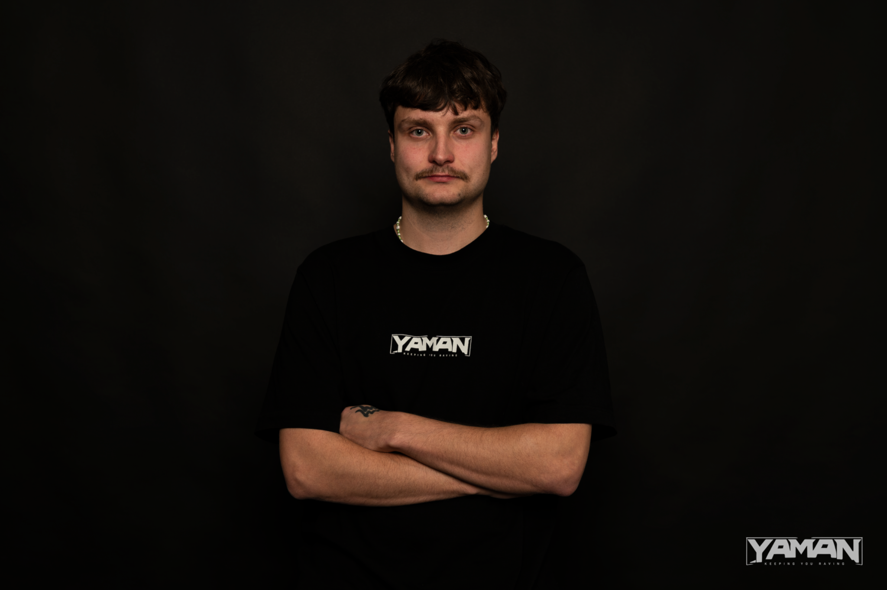

← Zpět na crew← Back to crew
Sound Engineer / DJ
BoozedGuy
YAMAN zvukař a DJ. BoozedGuy se zaměřuje na silný sound, čistý audio zážitek a temnou underground drum and bass energii. Jeho role je držet každý YAMAN event hutný, čitelný a fyzicky silný. Sound engineer and DJ of YAMAN. BoozedGuy focuses on powerful sound, clean audio experience and dark underground drum and bass energy. His role is to keep every YAMAN event sounding heavy, clear and physically present.